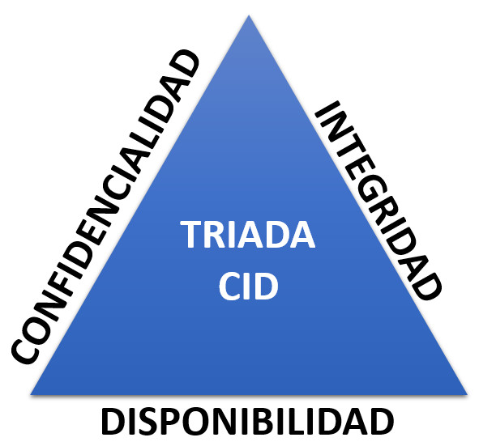
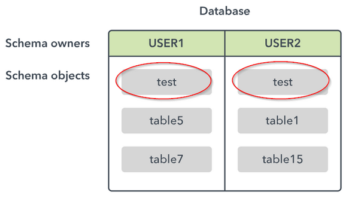

La Triada CID (Confidencialitat, Integritat, Disponibilitat) en Oracle
La triada CID (Confidencialitat, Integritat i Disponibilitat) és un model de seguretat fonamental per garantir la protecció de la informació en qualsevol sistema informàtic, inclòs Oracle. Aquest model es fa servir per establir les bases de les polítiques de seguretat, i Oracle, com a sistema de gestió de bases de dades (SGBD), té diverses característiques i eines que permeten implementar-lo eficaçment.
1. Confidencialitat (Confidentiality)
La confidencialitat es refereix a la protecció de la informació per evitar que sigui accedida per usuaris no autoritzats. A Oracle, això es pot aconseguir mitjançant:
- Autenticació i control d'accés: Oracle utilitza sistemes d'autenticació com l'usuari/contrassenya per garantir que només els usuaris autoritzats puguin accedir a la base de dades.
- Privilegis i rols: Els rols i privilegis d'Oracle defineixen els drets d'accés de cada usuari a les dades. Els privilegis poden ser assignats a rols específics i aquests rols assignats als usuaris.
- Xifrat de dades (Encryption): Oracle permet xifrar tant les dades en repòs com les dades en trànsit. La funció de xifrat de bases de dades d'Oracle (TDE - Transparent Data Encryption) xifra les dades emmagatzemades, mentre que el xifrat SSL/TLS s'utilitza per protegir les dades durant la transmissió.
- Auditoria: Oracle ofereix eines per auditar l'accés a la base de dades i registrar les operacions realitzades. Això permet detectar accés no autoritzat a dades sensibles.
2. Integritat (Integrity)
La integritat de les dades fa referència a la seva exactitud, coherència i fiabilitat al llarg del temps. Per garantir-la en Oracle, es poden utilitzar diversos mecanismes:
- Restriccions (Constraints): Oracle permet definir restriccions per garantir la coherència de les dades (per exemple, restriccions de clau primària, clau forana, unicitat i validesa).
- Comprovació de validesa (Validations): Es poden utilitzar triggers o funcions per validar les dades abans d'introduir-les a la base de dades. Això ajuda a mantenir la qualitat i la integritat de la informació.
- Control de versions i còpies de seguretat: Les còpies de seguretat regulars i el control de versions ajuden a garantir que les dades puguin ser recuperades de manera fiable en cas de pèrdua o corrupció.
- Controls de transaccions (ACID): Oracle utilitza el model ACID (Atomicitat, Consistència, Aïllament, Durabilitat) per assegurar-se que les transaccions són processades correctament i no alteren la integritat de les dades.
3. Disponibilitat (Availability)
La disponibilitat fa referència a la capacitat de la base de dades per estar accessible i operativa en tot moment. Per assegurar la disponibilitat en Oracle, es poden utilitzar diversos mecanismes i tecnologies:
- Clústers i alta disponibilitat: Oracle suporta diverses solucions d'alta disponibilitat, com Oracle Real Application Clusters (RAC), que permeten que múltiples instàncies de bases de dades treballin en conjunt per garantir que la base de dades estigui sempre disponible, fins i tot en cas de fallades del sistema.
- Recuperació davant de desastres (Disaster Recovery): Oracle ofereix opcions de recuperació davant de desastres, com Oracle Data Guard, que permet replicar les dades en un lloc secundari per garantir que la base de dades estigui disponible en cas d'incidents importants.
- Còpies de seguretat i restauració: Utilitzar Oracle Recovery Manager (RMAN) per realitzar còpies de seguretat i restaurar les dades és essencial per garantir la disponibilitat dels serveis.
- Manteniment i monitorització: Oracle proporciona eines per monitoritzar la salut del sistema (Oracle Enterprise Manager) i per planificar el manteniment, per evitar aturades no desitjades i per identificar de manera proactiva possibles problemes de disponibilitat.
Resum
Implementar la triada CID en Oracle implica la combinació de múltiples mecanismes i eines que permeten protegir la informació:
- Confidencialitat: Autenticació, xifrat de dades, control d'accés i auditoria.
- Integritat: Restriccions de dades, control de transaccions i còpies de seguretat.
- Disponibilitat: Alta disponibilitat, recuperació davant de desastres i monitorització activa.
Amb aquests mecanismes, Oracle permet als administradors de bases de dades protegir les dades i garantir que es compleixin les pràctiques de seguretat requerides per a una bona gestió de la informació.
👤 Usuaris en Oracle
Els usuaris permeten configurar el mecanisme de Confidencialitat, Identificant (nom d'usuari), autenticant (amb password, per exemple) i restringint l'accés a dades no permeses (amb els privilegis)
Un usuari pot fer i desfer dins del seu esquema, però NO pot fer res en un altre esquema. Llevat que se li atorgue algun permís o privilegi per tal menester
Què és un usuari?
Un usuari Oracle identifica una entitat que accedeix a la base de dades. Pot representar una persona, aplicació o procés.
Quan es crea un usuari, també es crea automàticament el seu esquema (schema), que conté els seus objectes: taules, vistes, procediments, etc.
Si un usuari 'user1' vol accedir a un objecte d'un altre usuari 'user2', haurà de anteposar al nom del objecte
, el nom del schema del propietari del objecte en el moment d'utilitzar la sentència SQL adequada.
Per exemple
-- Des d'user1, suposant que user1 té permis sobre table1 de user2....
SELECT * FROM user2.table1;🔐 Autenticació d'usuaris
- Local: usuari amb credencials dins de la base de dades
- Extern: validació per S.O., LDAP, Kerberos, Radius
- Global: autenticació empresarial o federada (Oracle Enterprise User Security)
- Schema-only: no necessita contrasenya (només objectes)
Tipus d'usuaris
- Predefinits: SYS, SYSTEM, SYSBACKUP, etc. (evitar-ne l'ús directe si no és estrictament necessari)
- Comuns: disponibles a totes les PDBs (requereixen prefix
C##) - Locals: definits dins d’una PDB concreta
Creació, modificació i baixa d'usuaris
-- Crear usuari en una PDB (cas més usual)
CREATE USER joan IDENTIFIED BY '1234';
-- Crear usuari comú (en CDB)
CREATE USER C##admin IDENTIFIED BY 'secure' CONTAINER=ALL;
-- Modificar contrasenya
ALTER USER joan IDENTIFIED BY 'nova_clau';
-- Eliminar usuari
DROP USER joan CASCADE;
-- Borra usuari i tots els objectes del seu schema
DROP USER joan;
-- Donarà error si joan te objectes en el seu schema
Atributs addicionals en la creació
CREATE USER enric IDENTIFIED BY secret DEFAULT TABLESPACE users TEMPORARY TABLESPACE temp QUOTA UNLIMITED ON users PROFILE default;
- QUOTA és obligatori si es volen crear objectes dins de l'schema
🔑 Donar permisos de connexió
Un usuari no pot connectar si no té el privilegi CREATE SESSION:
(i inicialment, quan es crea l'usuari, no té el privilegi automaticament !!)
GRANT CREATE SESSION TO joan;
Estats dels comptes
- Obert
- Bloquejat
- Expirat
- Expirat en període de gràcia
- i més..
Exemples de gestió:
ALTER USER joan ACCOUNT LOCK;
ALTER USER joan ACCOUNT UNLOCK;
ALTER USER joan PASSWORD EXPIRE;
🔍 Consultes útils
-- Usuaris existents
SELECT username, account_status FROM dba_users;
-- Esquema actiu
SELECT user FROM dual;
-- Paràmetres d’usuaris administratius
SELECT * FROM v$pwfile_users;
Notes importants
- No es poden crear usuaris directament a
CDB$ROOTsense permisos especials - Un usuari pot tindre un únic perfil i múltiples rols i privilegis
- S'ha de donar quota d'espai per a crear objectes
Exemple complet: usuari operatiu
CREATE USER enric IDENTIFIED BY secret
DEFAULT TABLESPACE tab_app
QUOTA UNLIMITED ON tab_app
PASSWORD EXPIRE;
GRANT CONNECT, RESOURCE TO enric;
💬 Autenticació en multitenant (CDB/PDB)
- SYS només pot accedir amb
AS SYSDBA - Es recomana accedir a les PDBs amb usuaris locals
-- Connexió com SYSTEM a PDB1
sqlplus system@localhost/pdb1
Vistes relacionades amb usuaris
DBA_USERSV$PWFILE_USERSUSER_USERSSESSION_USERS
Bones pràctiques
- Canviar contrasenyes predefinides
- No usar SYS o SYSTEM per a operacions del dia a dia
- Crear un tablespace separat per a cada aplicació/usuari
- Utilitzar rols i perfils per gestionar permisos i restriccions
🔐 Bloquejar Usuaris i Forçar a Canviar Contrasenya en Oracle
Per bloquejar usuaris i forçar-los a canviar la seua contrasenya a Oracle, es poden fer servir diverses funcionalitats per gestionar les contrasenyes i els comptes d'usuari.
Un usuari bloquejat NO POT accedir al sistema i no pot canviar el estat per si mateix. Ho ha de sol·licitar al DBA
Un usuari amb la password expirada ( i en periode de gràcia) SI pot accedir, sempre que abans canvie la contrasenya expirada
Un usuari amb la password expirada i fora del periode de gràcia, NO pot accedir. Si vol accedir, ho ha de sol·licitar al DBA
Usuari amb contrasenya a punt de caducar (Període de gràcia imminent). Oracle pot permetre l'accés, però el sistema pot mostrar una advertència que la contrasenya caducarà en breu. Això depèn de la configuració del perfil.
1. Bloquejar / desbloquejar un Usuari en Oracle
Bloquejar un usuari:
ALTER USER <nom_usuari> ACCOUNT LOCK;On <nom_usuari> és el nom de l'usuari que vols bloquejar.
Desbloquejar un usuari:
ALTER USER <nom_usuari> ACCOUNT UNLOCK;2. Forçar un Usuari a Canviar la Contrasenya
Oracle permet forçar que un usuari canvie la seva contrasenya en el pròxim inici de sessió. Per fer-ho, s'utilitza l'ordre següent:
ALTER USER <nom_usuari> PASSWORD EXPIRE;3. Combinació d'ordres per Bloquejar i Forçar el Canvi de Contrasenya
Si vols bloquejar un usuari i, a més, forçar-lo a canviar la contrasenya quan siga desbloquejat, pots utilitzar aquestes dues ordres:
ALTER USER <nom_usuari> ACCOUNT LOCK;
ALTER USER <nom_usuari> PASSWORD EXPIRE;4. Configurar el Caducament Automàtic de Contrasenyes
Per configurar que Oracle force el canvi de contrasenya automàticament després d'un cert temps
(per exemple, després de 30 dies), pots configurar la política de contrasenyes de la base de dades.
Això es fa mitjançant l'atribut PASSWORD_LIFE_TIME del perfil d'usuari:
Els perfils es veuen en esta unitat, un poc més endavant...
ALTER PROFILE <nom_perfil> LIMIT PASSWORD_LIFE_TIME <dies>;Exemple (per 30 dies):
ALTER PROFILE DEFAULT LIMIT PASSWORD_LIFE_TIME 30;Això farà que les contrasenyes dels usuaris que tinguen aquest perfil caduquen després de 30 dies, forçant-los a canviar la contrasenya en el següent inici de sessió.
Aquests són els mecanismes bàsics per gestionar usuaris en Oracle, bloquejant-los i forçant-los a canviar les contrasenyes quan siga necessari.
🗝️ Permisos en Oracle
Què són els permisos (privilegis)?
Els permisos o privilegis són drets que Oracle atorga als usuaris per fer determinades accions sobre la base de dades: accedir, modificar, crear, administrar objectes o usuaris.
Tipus de permisos
- Privilegis de sistema: permeten executar accions globals (crear taules, accedir a sessions...)
- Privilegis d’objecte: permeten accedir o modificar objectes concrets (taules, vistes...)
Exemples de privilegis de sistema
CREATE SESSION→ accedir a OracleCREATE TABLE→ crear taulesUNLIMITED TABLESPACE→ ús il·limitat d’espai
Exemples de privilegis d’objecte
SELECT,INSERT,UPDATE,DELETEsobre taulesEXECUTEsobre procediments i funcions
Assignació de privilegis
-- Sistema
GRANT CREATE SESSION TO joan;
-- Objecte
GRANT SELECT, INSERT ON alumnes TO joan;
♻️ Revocar permisos
-- Sistema
REVOKE CREATE SESSION FROM joan;
-- Objecte
REVOKE INSERT ON alumnes FROM joan;
🌐 Propagació amb GRANT OPTION
Permet que un usuari que ha rebut un privilegi el pugui concedir a un altre:
GRANT SELECT ON alumnes TO joan WITH GRANT OPTION;
👀 Consultes útils
-- Privilegis de sistema atorgats
SELECT * FROM dba_sys_privs WHERE grantee = 'JOAN';
-- Privilegis d’objecte
SELECT * FROM dba_tab_privs WHERE grantee = 'JOAN';
-- Què puc fer?
SELECT * FROM session_privs;
🧪 Exemple pràctic
-- Crear usuari i donar accés bàsic
CREATE USER marta IDENTIFIED BY 1234;
GRANT CREATE SESSION, CREATE TABLE TO marta;
-- Permetre a marta consultar alumnes
GRANT SELECT ON alumnes TO marta; -- es dona a marta permis per consultar taula alumnes (usuari propietari de la taula alumnes)
-- 'o'
GRANT SELECT ON joan.alumnes TO marta;
-- es dona a marta permis per consultar taula alumnes de l'usuari joan
Si un usuari 'user1' vol accedir a un objecte d'un altre usuari 'user2', haurà de anteposar al nom del objecte
, el nom del schema del propietari del objecte en el moment d'utilitzar la sentència SQL adequada.
Per exemple
-- Des d'user1, suposant que user1 té permis sobre table1 de user2....
SELECT * FROM user2.table1;Consideracions importants
- Els privilegis de sistema són molt potents: assigna només els necessaris
- Els privilegis d’objecte poden donar-se amb més flexibilitat
- No utilitzis
GRANT ALLllevat que sigui imprescindible - Revisa i revoca privilegis regularment
📘 Bones pràctiques
- Usa rols per agrupar permisos (veurem a la següent secció)
- Documenta què rep cada usuari i per què
- Monitoritza qui té permisos amb consultes sobre el diccionari de dades
🎭 Rols en Oracle
Què és un rol?
Un rol és un conjunt de permisos agrupats baix un nom. Serveix per simplificar la gestió de privilegis, especialment en entorns amb molts usuaris.
En compte d'assignar 10 permisos a cada usuari, es crea un rol amb aquests permisos i s'assigna el rol.
Tipus de rols
- Predefinits (creats per Oracle):
DBA,CONNECT,RESOURCE,SELECT_CATALOG_ROLE, etc. - Definits per l’usuari: creats per l’administrador segons les necessitats específiques
- Rols actius/inactius: en una sessió es poden activar o desactivar rols
🛠️ Crear i assignar rols
-- Crear un nou rol
CREATE ROLE gestor_aula;
-- Concedir permisos al rol
GRANT CREATE SESSION, CREATE TABLE TO gestor_aula;
-- Assignar el rol a un usuari
GRANT gestor_aula TO marta;
Revocar rols
REVOKE gestor_aula FROM marta;
🔍 Consultes útils
-- Rols assignats a un usuari
SELECT * FROM dba_role_privs WHERE grantee = 'MARTA';
-- Rols definits al sistema
SELECT * FROM dba_roles;
-- Privilegis d’un rol
SELECT * FROM role_sys_privs WHERE role = 'GESTOR_AULA';
Exemple pràctic complet
CREATE ROLE aplicacio_web;
GRANT CREATE SESSION TO aplicacio_web;
GRANT SELECT, INSERT, UPDATE ON alumnes TO aplicacio_web;
CREATE USER webapp IDENTIFIED BY secret;
GRANT aplicacio_web TO webapp;
Bones pràctiques
- Agrupa privilegis per rols segons la funcionalitat (ex: lectura, administració, desenvolupament)
- Documenta què fa cada rol i qui l’ha de tenir
- No afegeixis
ALL PRIVILEGESdins d’un rol sense motiu justificat - Usa rols en lloc de donar permisos individuals sempre que siga possible
Perfils en Oracle
Què és un perfil?
En Oracle, un perfil és un conjunt de restriccions i paràmetres que s’apliquen als usuaris de la base de dades. Aquests paràmetres permeten controlar l’ús de recursos del sistema (com el nombre màxim de sessions, temps connectat, etc.) i establir polítiques de seguretat sobre les contrasenyes.
En oracle hi ha un perfil predefinit. El perfil anomenat DEFAULT
Quan es crea un usuari, se li assigna un perfil per defecte -> DEFAULT
SQL> select * from dba_profiles where profile=’DEFAULT’;
Un perfil té dos tipus/grups de paràmetres
- Paràmetres de recursos
- Paràmetres de contrasenyes
Paràmetres de recursos
Els paràmetres de recursos limiten l’ús que pot fer un usuari del sistema. Alguns dels més comuns són:
- SESSIONS_PER_USER: Número màxim de sessions que pot tenir un usuari.
- CONNECT_TIME: Temps màxim de connexió per sessió (en minuts).
- IDLE_TIME: Temps màxim que un usuari pot estar inactiu abans de ser desconnectat.
- CPU_PER_SESSION i CPU_PER_CALL: Límit de CPU (en centèsimes de segon).
- LOGICAL_READS_PER_SESSION i LOGICAL_READS_PER_CALL: Límit de lectures lògiques en blocs.
Paràmetres de contrasenya
Els paràmetres de contrasenya ajuden a reforçar la seguretat dels usuaris, control·lant aspectes com:
- FAILED_LOGIN_ATTEMPTS: Nombre d'intents fallits d'autenticació abans de bloquejar el compte.
- PASSWORD_LIFE_TIME: Durada de la contrasenya abans que expiri (en dies).
- PASSWORD_REUSE_TIME: Temps mínim que s'ha d'esperar per reutilitzar una contrasenya.
- PASSWORD_REUSE_MAX: Nombre màxim de vegades que es pot reutilitzar la contrasenya.
- PASSWORD_LOCK_TIME: Temps de bloqueig del compte després de superar els intents fallits.
- PASSWORD_GRACE_TIME: Període de gràcia en què l'usuari pot canviar la contrasenya després que hagi expirat.
- PASSWORD_VERIFY_FUNCTION: Funció de verificació de contrasenyes per aplicar polítiques de complexitat.
Crear i modificar perfils
Pots crear un perfil nou amb l'ordre CREATE PROFILE i modificar-lo amb ALTER PROFILE.
-- Exemple de creació d'un perfil amb restriccions de recursos i contrasenya
CREATE PROFILE perf-adm LIMIT
SESSIONS_PER_USER 5
CONNECT_TIME 120
IDLE_TIME 30
FAILED_LOGIN_ATTEMPTS 4
PASSWORD_LIFE_TIME 165;
-- Modificar un perfil per establir un temps de bloqueig de la contrasenya
ALTER PROFILE perf-adm LIMIT PASSWORD_LOCK_TIME 5;
Assignar un perfil a un usuari
En crear o modificar un usuari, pots assignar-li un perfil per limitar els recursos i aplicar polítiques de seguretat:
-- Crear un usuari amb un perfil específic
CREATE USER enric IDENTIFIED BY secret
DEFAULT TABLESPACE tab_app
QUOTA UNLIMITED ON tab_app
PROFILE perf-adm;
-- O actualitzar un usuari existent per assignar-li un perfil
ALTER USER enric PROFILE perf-adm;
Bones pràctiques
- Assigna perfils adaptats a la naturalesa dels usuaris (admins, desenvolupadors, operatius, etc.).
- Revisa periòdicament els paràmetres de recursos i contrasenya per garantir un equilibri entre rendiment i seguretat.
- Assegura’t que els usuaris amb privilegis elevats tinguin polítiques de seguretat més estrictes.
- Utilitza el perfil DEFAULT com a punt de partida i modifica els paràmetres segons les necessitats específiques.
🔍 Consultes útils relacionades amb perfils
-- Consultar els perfils definit per la base de dades
SELECT * FROM dba_profiles ORDER BY profile;
-- Consultar paràmetres de tipus PASSWORD en el perfil DEFAULT
SELECT * FROM dba_profiles WHERE resource_type = 'PASSWORD';
-- Consultar usuaris i els seus perfils
SELECT username, profile FROM dba_users;
🔍 Esborrar perfils
DROP PROFILE nom_perfil;
o
DROP PROFILE nom_perfil [CASCADE];
Especifiqueu CASCADE per desassignar el perfil dels usuaris a qui estigui assignat. Oracle Database assigna automàticament el perfil DEFAULT a aquests usuaris. Heu d'especificar aquesta clàusula per eliminar un perfil que està assignat actualment als usuaris
Resum
Els perfils en Oracle són eines fonamentals per controlar l’ús dels recursos i reforçar la seguretat dels comptes d’usuaris. Mitjançant la creació, modificació i assignació de perfils, es pot garantir que els usuaris compleixin amb les polítiques establertes, tot assegurant un rendiment òptim i la protecció de la base de dades.
Vistes com a Element de Seguretat en Oracle
Les vistes (views) en Oracle poden ser un element molt poderós per a la seguretat de les dades, ja que permeten controlar quines dades poden ser accessibles pels usuaris i com aquestes dades són presentades. Les vistes no emmagatzemen dades pròpiament dites, sinó que són definicions de consultes SQL que es poden utilitzar com si fossin taules normals. Això significa que les vistes permeten a l'administrador de bases de dades (DBA) establir un nivell de seguretat i restricció per a l'accés a la informació a través de consultes personalitzades.
Vistes com a element de seguretat a Oracle
A continuació, explico algunes de les principals maneres en què les vistes poden ser utilitzades per millorar la seguretat en Oracle:
1. Restricció d'Accés a Dades Sensibles
Descripció: Les vistes permeten crear consultes personalitzades que poden ocultar certes columnes o taules que contenen dades sensibles. En lloc de permetre que un usuari accedeixi directament a una taula, es pot crear una vista que exposi només una part de les dades.
CREATE VIEW vista_clients_completa AS
SELECT nom, adreca, telefon
FROM clients;Avantatge de seguretat: Limita l'exposició de dades sensibles a només la informació necessària, millorant la seguretat de la informació confidencial.
2. Autenticació de Consultes
Descripció: Pots utilitzar vistes per garantir que només es poden realitzar consultes sobre un conjunt específic de dades segons el rol o els permisos d'un usuari. Això es fa mitjançant el control de permisos en les vistes.
GRANT SELECT ON vista_clients_completa TO usuari_x;Avantatge de seguretat: Aquesta tècnica permet controlar l'accés a les dades a nivell d'usuari, garantint que només els usuaris autoritzats tinguin accés a les vistes que exposen les dades filtrades o restringides.
3. Control de Columnes
Descripció: Les vistes permeten ocultar columnes senceres d'una taula, cosa que és útil per amagar dades que no s'haurien de mostrar. Això és especialment útil quan les taules contenen dades sensibles, com ara contrasenyes, números de seguretat social, etc.
CREATE VIEW vista_usuaris AS
SELECT id, nom, correu
FROM usuaris;Avantatge de seguretat: Permet amagar dades sensibles i garantir que només la informació necessària sigui accessible.
4. Control de les Consultes Realitzades
Descripció: Mitjançant la creació de vistes, es pot controlar exactament quines consultes són permeses i com són realitzades. Això permet als administradors establir regles de consulta que limitin l'accés a determinats conjunts de dades.
CREATE VIEW vista_transaccions_usuaris AS
SELECT transaccio_id, data, import
FROM transaccions
WHERE usuari_id = :usuari_id;Avantatge de seguretat: Pot restringir l'abast de les dades consultades i garantir que els usuaris només obtinguin informació rellevant i personalitzada.
5. Vistes Amb Funcionalitat de Seguretat Basada en Rols
Descripció: Utilitzant vistes, pots aplicar seguretat a nivell de rols, permetent que només certs rols d'usuari puguin accedir a determinades dades. Per exemple, un DBA pot crear una vista per a usuaris normals que només mostri informació bàsica, mentre que un usuari amb un rol administratiu podria tenir accés a una vista més detallada.
CREATE VIEW vista_dades_normals AS
SELECT nom, adreça FROM clients;
CREATE VIEW vista_dades_administrador AS
SELECT * FROM clients;L'usuari amb un rol normal només pot veure vista_dades_normals, mentre que l'usuari amb rol d'administrador té accés a vista_dades_administrador.
Avantatge de seguretat: Permet controlar l'accés a les dades basat en rols d'usuari, garantint que els usuaris només tinguin accés a la informació que necessiten.
6. Auditoria i Monitorització de Consultes
Descripció: Les vistes també poden ser útils per auditar i monitoritzar les consultes. Per exemple, pots crear una vista que permeti a l'usuari visualitzar només els canvis realitzats en la taula de transaccions en un període de temps determinat.
CREATE VIEW vista_transaccions_audit AS
SELECT transaccio_id, data, import, operacio
FROM transaccions_audit
WHERE data > '2024-01-01';Avantatge de seguretat: Això permet monitoritzar l'activitat de la base de dades i detectar possibles accessos no autoritzats o activitats sospitoses.
Conclusions
Les vistes en Oracle són una eina molt potent per millorar la seguretat de les dades en una base de dades. Algunes de les maneres en què es poden utilitzar com a element de seguretat són:
- Restricció d'accés a dades sensibles
- Autenticació de consultes mitjançant l'assignació de permisos a les vistes.
- Control de columnes per amagar dades sensibles.
- Control de consultes per limitar l'abast de les dades consultades.
- Seguretat basada en rols per restringir l'accés a vistes específiques segons els permisos d'usuari.
- Auditoria i monitorització per fer seguiment de les operacions en la base de dades.
Les vistes permeten personalitzar l'accés a la informació i garantir que només els usuaris autoritzats tinguin accés a dades crítiques.
Ús de Synonyms en Oracle
Un synonym (sinònim) en Oracle és un àlies o nom alternatiu per a un objecte de base de dades com una taula, vista, seqüència, procediment, funció, paquet o altre objecte. Els synonyms s’utilitzen per simplificar l'accés als objectes i millorar la seguretat.
Tipus de Synonyms
- Public Synonym: Visible per a tots els usuaris de la base de dades.
- Private Synonym: Només visible per a l’usuari que el crea.
Beneficis de Seguretat i Usabilitat
- Oculta el nom real o l'esquema de l'objecte.
- Permet controlar millor els accessos a objectes a través de permisos sobre el synonym.
- Facilita la migració o canvi d'esquema sense afectar el codi SQL que fa servir el synonym.
Exemples d’ús
1. Crear un synonym privat
CREATE SYNONYM emp FOR empresa.empleats;Ara, en lloc de fer servir empresa.empleats, l’usuari pot fer servir simplement emp.
2. Crear un synonym públic
CREATE PUBLIC SYNONYM emp FOR empresa.empleats;Tots els usuaris poden accedir a la taula empleats com emp, sempre que tinguin permisos.
3. Eliminar un synonym
DROP SYNONYM emp;
DROP PUBLIC SYNONYM emp;Consideracions de Seguretat
- No atorga automàticament permisos sobre l'objecte. Cal fer un
GRANTper separat. - Poden ser útils per limitar l’exposició d’esquemes i estructures internes.
- Els synonyms públics han de ser usats amb precaució per evitar conflictes i exposició d’objectes no desitjats.
Conclusió
Els synonyms en Oracle són útils per simplificar noms d’objectes i ocultar detalls interns. Utilitzats correctament, poden millorar l’organització, la seguretat i la flexibilitat de les aplicacions que accedeixen a la base de dades.